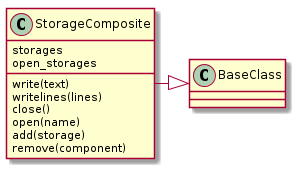

In order to support multiple output-targets, a Composite will be used to store Storage objects. This is intended to be the main interface for storage. Although it is called a Composite, this differs from the main Composite class used by the Tuna to run the code in that it cannot use the __call__ method (or it can, but it needs to take arguments).

StorageComposite |
|
StorageComposite.storages |
|
StorageComposite.write |
|
StorageComposite.writelines |
|
StorageComposite.close |
|
StorageComposite.open |
|
StorageComposite.add |
|
StorageComposite.remove |
|
check_opened |
The StorageComposite maintains a list of file-like objects and, once open is called, a list of opened file-like objects.